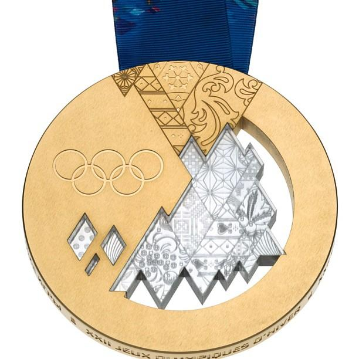

DevStorm
Web Apps Hackathon
Design. Innovate. Learn. Share.
Welcome and thank you!
github.com/ArcGIS/webappshack
This is a real hackathon!
DevStorm?
devstorm@esri.com
compass.esri.com
Why web mapping apps?
Popular
Easy to build
Powerful APIs
Easy to share
Why are we here?
Build Powerful and Amazing Web Mapping Apps
Design (UI+UX)

Innovate
Learn
Share
Schedule
Tuesday
8:00 AM - 10:00 AM - Presentations
11:45 AM - Project Declarations
12:00 PM - Lunch
4:45 - 9:00 PM - Move to Cafe for Pizza!
Wednesday
8:00 AM - Start Coding
12:00 PM - Lunch
3:00 PM - All submissions in
3:30 - 5:30 PM - Presentations and Awards
Breakout Rooms
Green Room
L1 Fourplex
No food or beverages
Snacks 10 AM & 2 PM
Submissions
All Pull Requests in by 3:00 PM
All Source
Databases can be refereced
Judging Criteria
1. UI and UX
2. Use of ArcGIS Platform
3. Real-world Use
4. Completeness
Presentations
3-5 minutes
+
2-3 minutes Q&A
Awards
1. Best Tourist App
2. Best Business App
3. Best City-Works App
4. Best Responsive App
DevSummit - on stage
Resources

github.com/ArcGIS/webappshack
ArcGIS Online Group
Need to Join?
New Esri map pins (offset 1/2 height)
ArcGIS Platform
APIs & Services
Samples & Templates
Open Source
Analytics
Guests Speakers
Melanie Harlow, Competitive Information
Steven Nelson, Creative Lab
Julie Powell, Development Team
What's the challenge?
"Web-Appify Big Bear"
Introducing Siri...
App Ideas
github.com/ArcGIS/webappshack
Join us on esri.github.io